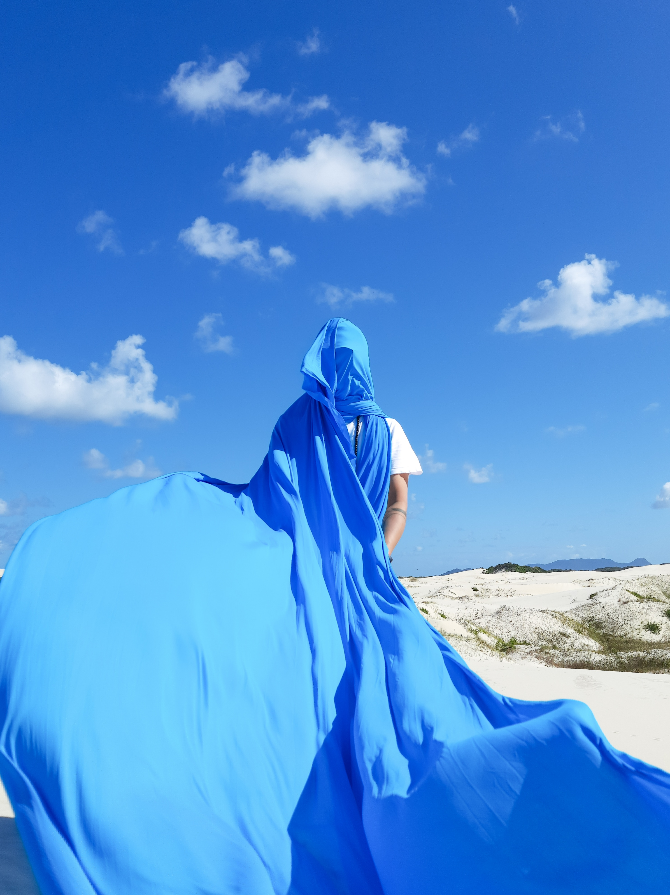

Bastião
Maranhão, Floripa e Arujá — Brasil
investiga a construção simbólica do céu a partir da fotografia e da materialidade do tecido. Imagens capturadas em diferentes horários são convertidas em superfícies têxteis de variados formatos e tons de azul, aproximando-se do imaginário coletivo de "céu". Esses fragmentos são então aplicados sobre objetos, espaços e o próprio corpo, inserindo-se no ambiente de maneira deliberadamente dissonante. O trabalho opera nessa zona de estranhamento, onde o artificial tenta se fundir ao natural, tensionando percepção, escala e pertencimento.


